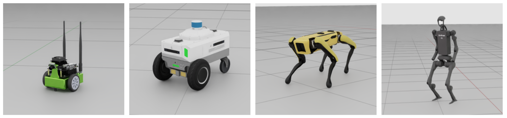
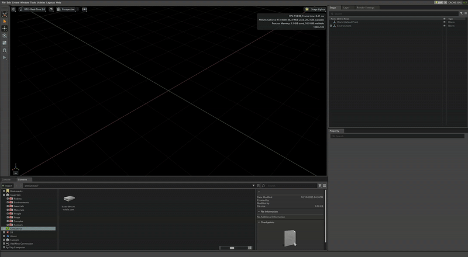
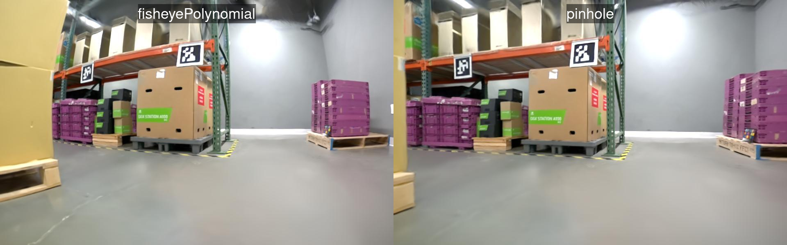
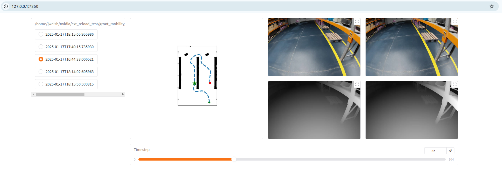

使用 MobilityGen 生成数据#
MobilityGen 是基于 NVIDIA Isaac Sim 构建的工具集， 使您能够为移动机器人生成和收集数据。



MobilityGen 支持：
- 多种机器人类型
差速驱动 - Jetbot, Carter
四足机器人 - Spot
人形机器人 - H1
- 多种传感器配置
- 单前置摄像头配置
JetbotRobot, CarterRobot, H1Robot, SpotRobot
- 基于 USD 的多传感器装置（当前版本仅支持多摄像头）
JetbotMultiSensorRobot, CarterMultiSensorRobot, H1MultiSensorRobot, SpotMultiSensorRobot
- 多种数据收集方法
手动 - 键盘遥操作，游戏手柄遥操作
自动 - 随机加速度，随机路径跟随
使用 MobilityGen 生成数据#
启动 Isaac Sim#
从终端启动 Isaac Sim 并禁用多 GPU 渲染：
./isaac-sim.sh --/renderer/multiGpu/enabled=false
注意
使用 MobilityGen 时，始终使用 --/renderer/multiGpu/enabled=false 启动 Isaac Sim。在具有多个 GPU 的机器上，如果保持多 GPU 渲染启用，
可能会导致 CUDA 错误或 MobilityGen 启动期间崩溃。
构建占用地图#
必须创建环境的占用地图。
本教程使用一个示例仓库场景。
加载仓库场景：
如果内容浏览器尚未打开，请打开它（Window > Browsers > Content）。
加载位于 Isaac Sim/Environments/Simple_Warehouse/warehouse_multiple_shelves.usd 的仓库 USD 文件。
创建占用地图：
选择 Tools > Robotics > Occupancy Map 以打开 Occupancy Map 扩展。
在 Occupancy Map 窗口中，将 Origin 设置为：
X：2.0Y：0.0Z：0.0
要在文本框中输入值，请
ctrl + left click以激活输入模式。在 Occupancy Map 窗口中，将 Upper Bound 设置为：
X：10.0Y：20.0Z：2.0（假设机器人可以在两米高的天桥下移动）
在 Occupancy Map 窗口中，将 Lower Bound 设置为：
X：-14.0Y：-18.0Z：0.1（假设机器人可以越过5cm的凸起）
请注意，为占用地图的上界和下界指定的坐标定义了 warehouse_multiple_shelves.usd 场景中我们希望机器人能够导航的边界框。我们预先选择了覆盖主要地面区域的值。 当使用不同的场景时，您可以调整这些边界以覆盖适合您的 USD 场景的区域。
点击 Calculate 以生成占用地图。
点击 Visualize Image 以查看占用地图。
在 Image File Name 字段中输入“map”，然后点击 Update YAML。
点击 Save YAML。
在树状资源管理器中，打开文件夹
~/MobilityGenData/maps/warehouse_multiple_shelves。在 Windows 上，将 ~ 替换为您选择的目录。
在文件名下方输入
map.yaml并点击保存。返回 Visualization 窗口，点击 Save Image。
在树状资源管理器中，打开文件夹
~/MobilityGenData/maps/warehouse_multiple_shelves。在文件名下方输入
map.png并点击保存。
验证现在是否有一个名为 ~/MobilityGenData/maps/warehouse_multiple_shelves/ 的文件夹，其中包含名为 map.yaml 和 map.png 的文件。
记录轨迹#
创建环境地图后，您可以使用 MobilityGen 生成数据：
启用 MobilityGen UI 扩展。
导航至 Window > Extensions 并搜索 MobilityGen UI。
点击 MobilityGen UI 扩展的切换开关。
验证是否打开了两个窗口。一个是 MobilityGen UI，另一个用于显示占用地图和可视化内容。当它们首次出现时，一个窗口可能隐藏在另一个窗口后面，因此我们建议将它们拖入窗口窗格中，以便同时查看两者。


构建场景：
在 MobilityGen 窗口的 Stage 下粘贴以下 USD：
在 MobilityGen 窗口的 Occupancy Map 中输入之前创建的
map.yaml文件的路径。~/MobilityGenData/maps/warehouse_multiple_shelves/map.yaml
在 Robot 下拉菜单中选择 H1Robot。
在 Scenario 下拉菜单中选择 KeyboardTeleoperationScenario。
点击 Build。
几秒钟后，验证场景和占用地图是否已显示。

使用以下按键测试驾驶机器人：
W- 前进A- 左转S- 后退D- 右转
开始录制：
点击 Start recording 开始录制日志。
移动机器人。
点击 Stop recording 停止录制。

数据现在默认记录到 ~/MobilityGenData/recordings。
传感器校准覆盖#
如果您在 Isaac Sim 中更改了机器人上的传感器——例如相机内参、畸变系数、投影类型或传感器变换——MobilityGen 会将这些编辑持久化为一个 小型 USD 差异文件，而不是机器人资产的全量副本。
以下对比展示了不使用持久化覆盖文件进行回放，与应用 sensor_overrides.usda 进行回放的差异，从而确保渲染出的相机画面与采集时的校准结果一致。


以下屏幕录制演示了在 UI 中应用传感器校准的过程，以及该过程如何与使用 sensor_overrides.usda 的录制和回放相结合。

MobilityGen 扩展使用 source/extensions/isaacsim.replicator.experimental.mobility_gen/python/impl/sensor_overrides.py 中的辅助函数来：
保存来自当前场景的校准覆盖项到每个录制目录中名为
sensor_overrides.usda的文件。仅写入您相对于引用的机器人 USD 修改过的属性；生成的结果是一个轻量级的覆盖层。应用该文件以进行回放或渲染：扩展加载
sensor_overrides.usda并将这些意见合并到机器人 prim 的 子树 上，从而使嵌套的相机和 rig 与采集时的校准结果匹配。
sensor_overrides.usda 是可选的：如果录制中不包含该文件（例如，早于该功能推出的录制），则在回放期间不会应用任何覆盖项。
回放与渲染#
录制轨迹（机器人位姿和关节状态）后，您可以以无头模式回放该轨迹，以渲染传感器图像（RGB、深度、分割、法线），而无需重新运行物理仿真。
注意
使用 Isaac Sim 5.x 录制的文件采用与 6.0 不同的磁盘存储格式，必须在回放前进行转换。有关转换脚本，请参阅 MobilityGen Package and Recordings。
Isaac Sim 附带了一个独立的回放脚本。请在 Isaac Sim 根目录下运行该脚本（将 ~/omni_isaac_sim 替换为您的实际 Isaac Sim 安装路径）：
./python.sh \
standalone_examples/replicator/mobility_gen/replay_directory.py \
--input ~/MobilityGenData/recordings \
--output ~/MobilityGenData/replays \
--render_interval 40
--input— 包含一个或多个录制文件的目录（每个录制文件位于其独立的子目录中）。--output— 用于写入包含渲染传感器数据的回放结果的目录。--render_interval— 每 N 个记录的物理步骤渲染一次。对于本教程中使用的 H1 机器人，40表示每 0.2 秒模拟时间渲染一次（5 Hz）。Spot 使用 0.002 秒的物理时间步长，因此若要获得相同的 5 Hz 输出速率，请使用100。将间隔设置为1可获得全帧率输出。
其他可选标志：
--rgb_enabled— 启用 RGB 图像渲染（默认值：True）。--depth_enabled— 启用深度图像渲染（默认值：True）。--segmentation_enabled— 启用语义分割渲染（默认值：True）。--normals_enabled— 启用表面法线渲染（默认值：False）。--instance_id_segmentation_enabled— 启用实例分割渲染（默认值：False）。--render_rt_subframes— 每个步骤的 RT 子帧数量；增加该值可提高渲染质量，但会降低速度（默认值：1）。
脚本运行结束后，请验证是否存在 ~/MobilityGenData/replays 文件夹，该文件夹包含渲染后的传感器数据。
您可以打开此文件夹以探索数据。某些数据（如分割掩码）仅通过文件浏览器难以可视化。
幸运的是，在开源的 MobilityGen GitHub 仓库中，有许多关于如何加载和处理录制数据的示例。我们建议通过运行 Gradio 可视化脚本来可视化您的录制数据。


要运行此示例，请克隆上述仓库，并在安装了 Gradio 的 Python 解释器中运行以下命令
python examples/04_visualize_gradio.py --input_dir ~/MobilityGenData/replays
您还可以查看 reader.py 文件，其中包含一个用于在 Python 中读取数据的辅助类。
提示#
生成程序化数据#
使用 MobilityGen 生成程序化移动数据的过程与上述基本遥操作工作流非常相似。
要生成程序化数据：
按照上述
Build an Occupancy Map创建环境的占用地图。按照上述
Record a Trajectory操作，但选择RandomPathFollowingScenario而不是KeyboardTeleoperationScenario。 - 您不再需要手动遥操作机器人。场景构建完成后，它将自动运行并重置。 - 您确实需要点击“start recording”以启用磁盘录制。但是，当场景重置时，将自动创建新的录制。 - 验证您是否已按照上述方式在~/MobilityGenData文件夹中收集了录制数据。按照上述
Replay and render从录制的轨迹中渲染传感器数据。
其他程序化场景（如 RandomAccelerationScenario）的处理过程类似。
添加自定义机器人#
您可以实现一个新机器人以在 MobilityGen 中使用。这涉及编辑 MobilityGen Examples 扩展中的 robots.py 文件。
一般工作流程如下：
使用您选择的编辑器打开
robots.py文件。该文件位于<isaac sim path>/exts/isaacsim.replicator.mobility_gen.examples/isaacsim/replicator/mobility_gen/examples/robots.py。创建一个继承自
MobilityGenRobot类的新类。或者，如果您的机器人符合现有的某种实现（如WheeledMobilityGenRobot），您可以继承该类。我们建议从查看
robots.py中的现有机器人实现开始，以便入门。一个好的起步方式是自定义现有的机器人。
如果您从零开始，请实现
MobilityGenRobot类的必需抽象方法：实现
build()方法。该方法负责将机器人添加到 USD 阶段。实现
write_action()方法。该方法接收线速度和角速度命令作为输入，并执行任何控制逻辑。覆盖常见的类参数（如 physics_dt）。
使用
ROBOTS.register()装饰器注册机器人类。这使得 MobilityGen 可以发现自定义机器人。
在上述文件中完成实现后，保存文件。
重启 Isaac Sim 后，请在 MobilityGen UI 中验证新机器人是否已注册并准备好进行数据采集。
由于注册新机器人需要编辑 Isaac Sim 构建文件，请在外部复制一份您的 robot.py 文件，以免丢失。
在定义机器人时，以下常见参数列表及其描述可能对您有所帮助
参数 |
描述 |
|---|---|
|
用于模拟机器人的物理时间步长。 |
|
生成机器人时的 Z 轴偏移高度。 |
|
用于生成第三人称视角相机的相对 USD 路径。通常设置为机器人基座坐标系。 |
|
生成第三人称视角相机时的相对 X 轴偏移量。 |
|
生成第三人称视角相机时的相对 Z 轴偏移量。 |
|
应用于第三人称视角相机的倾斜角度。 |
|
用于生成和路径规划的机器人足迹半径。 |
|
用于基于碰撞的回合终止的机器人足迹半径。 |
|
表示前置相机的静态类。 |
|
用于生成前置相机的相对 USD 路径。 |
|
生成前置相机时使用的相对 XYZ 旋转。 |
|
生成前置相机时使用的相对 XYZ 平移。 |
|
用于将键盘按键映射到机器人线速度的增益。增益越大，移动速度越快。 |
|
用于将键盘按键映射到机器人角速度的增益。增益越大，移动速度越快。 |
|
用于将游戏手柄轴移动映射到机器人线速度的增益。增益越大，移动速度越快。 |
|
用于将游戏手柄轴移动映射到机器人角速度的增益。增益越大，移动速度越快。 |
|
随机加速场景下的机器人线速度限制。 |
|
随机加速场景下的机器人角速度限制。 |
|
在随机加速场景中，每个时间步采样机器人线性加速度时使用的标准差。 |
|
在随机加速场景中，每个时间步采样机器人角加速度时使用的标准差。 |
|
在随机加速场景中，生成机器人时使用的网格大小。 |
|
在路径跟随场景中使用的恒定线性速度。 |
|
在路径跟随场景中用于比例转向控制的增益。较大的增益会导致更快的转向，但可能引起过冲和晃动。 |
|
机器人停止时的距离阈值。适用于路径跟随场景。 |
|
机器人向前移动时的角度阈值。适用于路径跟随场景。 |
|
在路径跟随场景中，用于生成机器人跟随的“目标点”的偏移距离。较大的偏移会使运动更平滑，但过大可能导致机器人在转弯时切角。 |
在 MobilityGen 中使用 NuRec 资产#
MobilityGen 在 USD 环境中运行，包括使用 NVIDIA NuRec 流程生成的 3D 重建场景。 NVIDIA PhysicalAI-Robotics NuRec 数据集 提供了可直接用作 MobilityGen 阶段的现成室内场景。
概述#
NuRec 场景以两种 USD 格式发布：Particle USD（基于粒子的表示形式）和 Volume USD（体积表示形式）。任一格式均可用作 MobilityGen 舞台（stage），许多场景还包含预计算的占用地图（occupancy map），可替代手动地图生成。
此工作流遵循上述相同的 MobilityGen 核心流程：选择或生成占用地图、记录轨迹，然后重放该轨迹以渲染传感器数据。使用 NuRec 资产时，仅舞台和占用地图的来源发生变化。
有关 MobilityGen 之外的 NuRec 资产背景信息，请参阅：
Real to Sim Assets：概述如何将真实世界物体和场景重建为 USD 和神经资产。
Neural Volume Rendering：介绍 RTX 如何渲染 NuRec 粒子场，以及如何在 Isaac Sim 中加载 NuRec 场景。
NuRec Rendering Utilities：用于渲染、检查和验证 NuRec 资产的实验性
isaacsim.replicator.nurec_utils模块。

使用 NuRec 场景#
从 NVIDIA PhysicalAI-Robotics NuRec 数据集下载粒子格式或体积格式的场景 USD 文件。
如果数据集为所选场景提供了占用地图，请直接使用该文件，并跳过占用地图生成步骤。
如果没有可用的占用地图，请在 Isaac Sim 中加载重建后的 USD，并按照与其他 MobilityGen 环境相同的占用地图流程进行操作。
在 MobilityGen 窗口中，将 Stage 设置为 NuRec 场景 USD 的路径，例如：
/path/to/nurec_scene.usd
将 Occupancy Map 设置为对应的
map.yaml文件，该文件可以来自数据集或生成的输出。继续执行标准的 MobilityGen 流程：记录轨迹，然后运行
replay_directory.py以回放并渲染传感器数据。
注意
完全支持对重建环境中记录的轨迹进行 RGB 渲染。可以启用深度渲染，但由于重建的几何体可能不完整或存在噪声，因此不保证准确性。在此工作流中，不支持对重建场景进行语义分割。
要在回放期间跳过深度和语义分割（推荐用于仅 NuRec 的工作流），请传递 replay_directory.py 支持的否定标志：
./python.sh \
standalone_examples/replicator/mobility_gen/replay_directory.py \
--input ~/MobilityGenData/recordings \
--output ~/MobilityGenData/replays \
--render_interval 6 \
--no-depth_enabled \
--no-segmentation_enabled
--no-depth_enabled 关闭深度图像渲染；--no-segmentation_enabled 关闭语义分割。RGB 默认保持开启（仅当您希望同时禁用 RGB 时才使用 --no-rgb_enabled）。
占用地图的质量取决于 USD 阶段中可用的碰撞几何体。在为重建场景生成地图时，请查看占用地图可视化结果，并在记录轨迹之前根据需要调整边界。
后续步骤#
在本教程中，你：
构建了用于 MobilityGen 的占用地图。
使用 H1 机器人通过键盘遥操作录制了 MobilityGen 轨迹。
基于录制的轨迹渲染传感器数据。
作为后续步骤，请尝试录制数据：
针对不同的机器人（例如：Spot）
使用不同的场景（例如：Random Path Following）